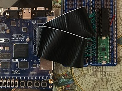
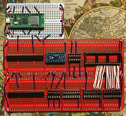
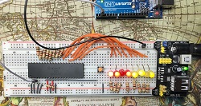

FPGA Current Projects status!
Over the past years (and especially in the last year) I have made progress working on FPGA projects. I just haven't blogged about it. I still have a habbit of charging ahead on a project w/o taking time to document what I am doing, at least in the form of a schematics and blogging along w/ some pictures of the project / progress.
One of the main purposes of blogging (or even vlogging) about projects is, at least for me, if I don't I will easily forget what I learned down the road and will have to basically re-learn it from scratch again w/o any notes to refresh my memory. The other purposes are to share my experience w/ others in the event they are interested in learning the same kind of things as me, and finally, like the old saying "If a tree falls in a forest and no one is around to hear it, does it make a sound?" - if I don't, then I have no record of it, it's like I never did it in the first place! What is the fun in that, right? :)
So what are the current projects?
One of my goals is to create a computer consisting of a real 70's or 80's CPU and a FPGA to implement all the rest of the motherboard logic with the exception of RAM & ROM. (In the case of the dev boards already have SRAM / SDRAM / and FLASH to implement the RAM and ROM).
So, what is the deal w/ the Raspberry Pi Pico? Well, I have been enamored with the Pico for a while now. The primary reason to include it, is to emulate peripherals; such as tape, floppy disks and hard drives. Other devices are RS232 emulation over WiFi, sound, music, and midi ... etc. And coprocessors such as math, video, etc ...
The goal on all these is to create a proper PCB motherboard that goes into case. Preferably into existing retro computer cases or perhaps something such as a Mini ITX or Micro ATX.
W65C02S-FPGA-Pico:

After finding out that the W65C02S can happily run at 3.3v I thought, cool, I can hook that up directly to an FPGA device. And the Pico runs at 3.3v as well. So I can have all three talking to each other seamlessly (through the FPGA) w/o the need of any voltage level shifting; which frankly is a bit of a pain.
Previously I hooked up a W65C02S to a Pico directly - just the two. And I can basically do what Ben Eater is doing at the beginning of his Build a 6502 computer series. My thoughts are to follow Ben Eater's series and create a computer like the one he ends up with. Since the FPGA and the Pico are both programmable, I could end up creating several computer clones or semi-clones.
This is working by the way. I have tested both the CPU/FPGA communication and the Pico/FPGA comunication. They both work w/o a hitch. I want to push the speed of the W65C02S. The spec says at 3.3v it is rated for 8MHz. We will see if my prototype allows it.
HD6309-FPGA-Pico:

This is the one that I really want to concetrate on - my ultimate goal is to create a 100% backward compatible CoCo3, eventually w/ all the inputs and outputs. And then expand on that to make a "CoCo4" - at least my version of one.
I am not done soldering up the prototype board yet ... but as you can see it is much more involved than the W65C02S as we have to use voltage level shifters on every signal coming in or out of the HD6309.
For through the hole parts I am using 74LVC245s, 74AHC125s and a TXB0108 break out from Adafruit to do the level shifting.
In addition to the original CoCo speeds I would like to push the HD6309 up to 4MHz. The spec says that a HD63C09 can run at 3MHz but I've heard it can do 4MHz. Again, we will see if my prototype allows it. I can't find an exact spec that tells me how fast the TXB0108 can switch directions for the data bus.
MC6803-FPGA-Pico:

I haven't gotten to far with this one yet. But I have experimented w/ the MC6803 in the past (at the beginning of 2019) and recently. So far twice I've setup a free-run system where the CPU is just executing NOPs and counting up the program counter and showing the address bus on LEDs.
The goal behind this one is to create a MC-10++ micro. Basically, a backward compatible MC-10 with a bunch of improvements and features.
Z80-FPGA-Pico:
I also did a free run on the Z80 back in 2019. But like the others I want to create a full flegded Z80 computer that can run C/PM and possibly a clone of the MSX2+ which I am quite fond of.